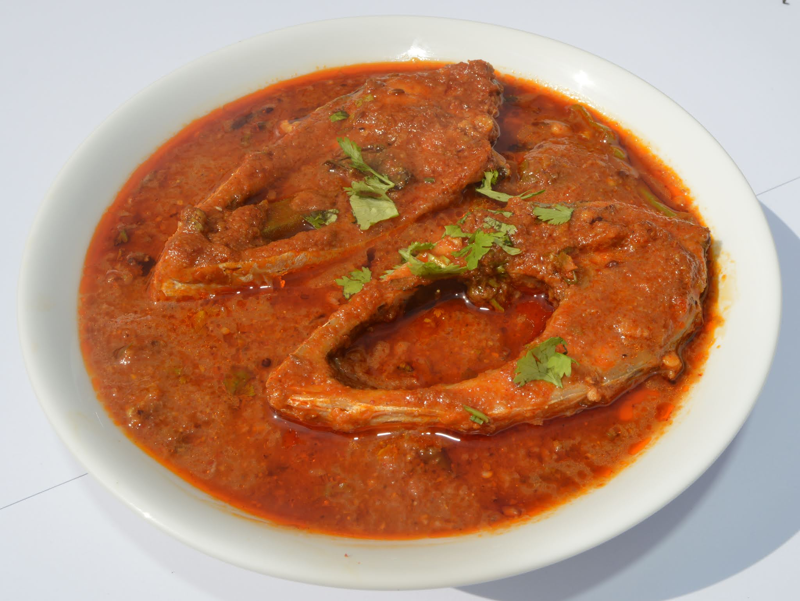

Pulasa Pulusu

ingredients to prepare dish :
- Tamrind
- Chilli powder
- Turmeric powder
- Tasting salt
- Large onion
- Coriander and cumin powder
- Oil
- Small tamato
- Okras
- Garlic
- Curry leaves
- Water
steps to make pulasa pulusu :
- The fish should be cleaned, sliced and set aside.
- Soak the tamarind in warm water and extract pulp. Keep it aside to let the juices flow out.
- Dice cut onion, tomato, garlic, blend with coriander seeds, cumin seeds - make a fine paste and keep it aside.
- For the best earthy flavour, use a clay pot and try to cook on charcoal flame.
- Firstly add oil, sliced fish, onion and tomato paste, chilli powder, turmeric powder, tamarind pulp, salt and mix well.
- Add curry leaves and add long diced okra, coriander leaves and water(750 ml) as per desired thickness.
- Leave the clay pot on the charcoal fire to cook for about 20 minutes. The Pulasa Pulusu is ready.
- Once cooled, serve it along with steamed rice and some fresh green salad.